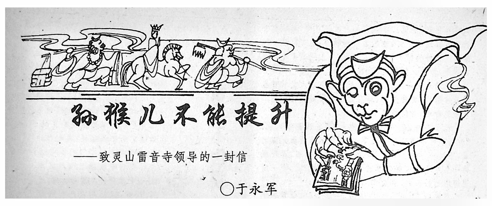

佚名 《人事》1990年第8期（总第59期），第40页
孙猴儿不能提升（题图）
The Monkey Must Not Be Promoted (title drawing)
- Text in the drawing
- 孙猴儿不能提升 / ——致灵山雷音寺领导的一封信
The Monkey Must Not Be Promoted / — a letter to the leaders of the Thunderclap Monastery on Vulture Peak - Passage illustrated
总之，象孙悟空这样历史上有严重问题，现实表现差劲，民愤极大的人，不能提拔到领导岗位，理应返回花果山，剥夺政治权利终身。
In sum, a person like Sun Wukong, who has serious problems in his history, poor present conduct and has aroused great popular indignation, must not be promoted to a leading post; he should be sent back to the Mountain of Flowers and Fruit and deprived of political rights for life.From the satirical letter 孙猴儿不能提升 (“The Monkey Must Not Be Promoted: A Letter to the Leaders of the Thunderclap Monastery on Vulture Peak”) by Yu Yongjun, on the same page. 于永军《孙猴儿不能提升——致灵山雷音寺领导的一封信》，同页
- Description
- Title drawing for the letter: the pilgrims of Journey to the West ride a cloud along the top, while Sun Wukong, the Monkey King, in a bow tie, sits writing with a brush.
- Note
- The piece parodies an anonymous denunciation letter (告状信), the standard weapon against a colleague about to be promoted. The “believer” accuses Sun Wukong of problems in his history, politics, finances, conduct and thinking — the categories of a cadre's political vetting — and signs off “for fear of reprisal, not under my real name.”
- Artist
- Unattributed 佚名
- Published in
- 《人事》1990年第8期（总第59期）, p. 40
- Themes
- Envy of talent · Promotion · Paperwork and documents · Fable, legend and history · Story illustrations

Cite
Unattributed, “孙猴儿不能提升（题图）” [The Monkey Must Not Be Promoted (title drawing)], Renshi (Personnel) 《人事》, 1990, no. 8, p. 40.